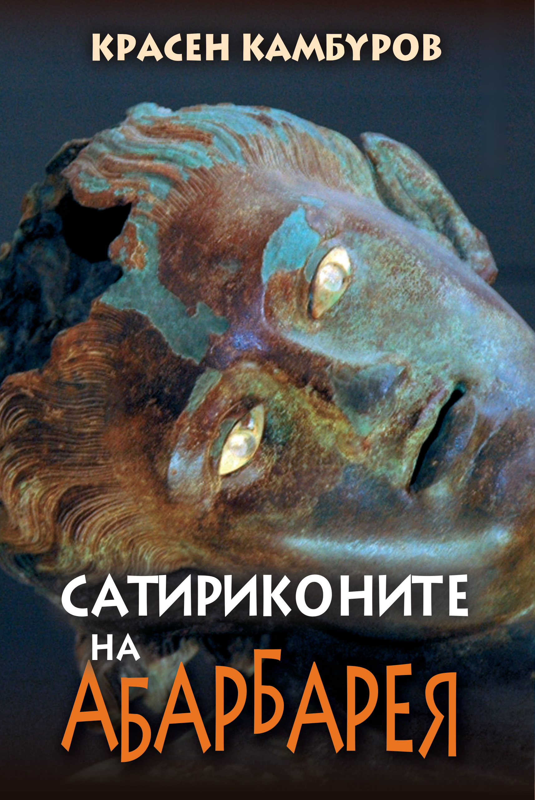

Сатирична проза и есеистика · 2015 · Красен Камбуров
Сатириконите на Абарбарея
Сборник сатирикони и литературни мистификации
Литературни мистификации, история и социална сатира се преплитат в писма, диалози и гротескови портрети.
Второ издание; първо електронно издание · София, 2026

За книгата
История, литературна игра и сатира
Книгата обединява разделите „Обнародвани сатирикони“, „Необнародвани сатирикони“, „Допълнения“ и „Преселения“. Във формата на писма, диалози, коментари и литературни мистификации авторът противопоставя културната памет на съвременните обществени нрави.
Електронното издание запазва сатиричните стилизации и вътрешните илюстративни разделители от печатното издание.
София · 2026
Електронно издание
Второ издание; първо електронно издание. Автор и издател: Красен Камбуров. Безплатно за лично, образователно и друго некомерсиално четене. Всички права запазени.
PDF: ISBN 978-619-94259-8-5
EPUB: ISBN 978-619-94259-9-2
Още от Красен Камбуров
Към всички книги ↗